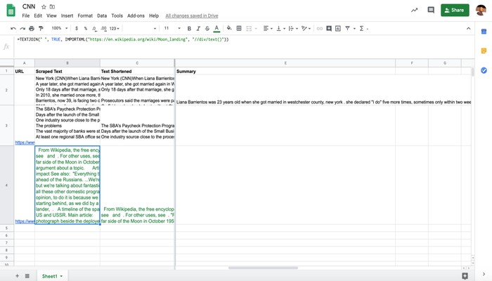
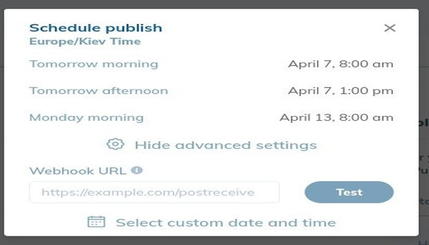

SEO : Automatiser la création de titres et de méta-descriptions

L’article développe sous python et javascript une solution d’automatisation de synthèse de texte en prenant en compte des dernieres solutions NLU/NLP.
Le but étant d’étudier le CTR d’une méta-description créée automatiquement vs une méta description optimisée humainement.
En ces temps difficiles, il est plus important que jamais d’optimiser son temps de travail en dépensant le moins de ressources possible.
Une tâche peu prisée et souvent négligée par les SEO est la rédaction de titres et de méta descriptions convaincantes.
En particulier lorsque le site compte des milliers ou des millions de pages.
Il est difficile de faire l'effort quand on ne sait pas si la récompense en vaudra la peine.
Dans cette rubrique, vous allez apprendre à utiliser les dernières nouveautés en matière de NLU / NLP pour produire automatiquement des titres et des méta descriptions optimisées.
Cette tactique d’automatisation passionnante, nous allons l’aborder de manière pratique sur de Google Sheets.
Nous apprendrons à mettre en œuvre cette fonctionnalité avec un minimum de code Python et JavaScript.
Voici notre méthodologie:
-
Nous allons mettre en œuvre et évaluer quelques modèles récents de synthétisation de texte dans Google Colab
-
Nous allons nous servir d’un des modèles à partir d'une fonction Google Cloud que nous pouvons facilement appeler depuis Apps Script et Google Sheets
-
Nous scraperons le contenu des pages directement à partir de Google Sheets et le résumerons grâce à notre fonction personnalisée
-
Nous déploierons nos titres et méta descriptions générés pour les tester dans Cloudflare en utilisant RankSense
-
Nous créerons une autre fonction Google Cloud pour déclencher l ‘indexation automatique dans Bing
Présentation de la librairie “Hugging Face Transformers”
Hugging Face Transformers est une bibliothèque populaire parmi les chercheurs en IA.
Elle fournit une interface unifiée et simple à utiliser pour les dernières recherches sur le langage naturel.
Il pas très important de savoir que cette librairie ait été codée à l'aide de Tensorflow (Google’s Deep Learning framework) ou Pytorch (Facebook’s framework).
Bien que la bibliothèque transformers offre un code plus simple, elle n’est pas aussi facile à utiliser pour les utilisateurs finaux que Ludwig.
Ce point a changé récemment avec l’introduction de transformers pipelines.
Les pipelines encapsulent de nombreux cas d’utilisation courante que l’on peut retrouver en NLP. Le tout avec un code minimal.
Ils offrent également une grande flexibilité dans l'utilisation du modèle sous-jacent.
En plusieurs étapes nous établirons des “transformer pipelines”, pratiques et qui contiennent dernières nouveautés NLP.
Nous emprunterons un peu de code aux exemples présentés sur ce notebook.
BART Facebook
Lors de l'annonce du projet BART, Mike Lewis, chercheur sur Facebook, a fait état de leur capacité de synthétisation de texte.
Qui sont à vrai dire, vraiment impressionnantes !
Nous sommes ravis de partager notre travail sur BART, une méthode de pré-formation des modèles seq2seq par denoising .
BART surpasse les travaux antérieurs sur un ensemble de tâches de génération (résumé/dialogue/assurance qualité), tout en obtenant des performances similaires à celles de RoBERTa sur SQuAD/GLUE
J'ai trouvé la performance de synthèse étonnamment bonne
BART semble en effet être capable de combiner des informations provenant de l'ensemble d'un document avec des connaissances de fond pour produire des résumés très pertinents. Voici quelques exemples typiques :
Voyons maintenant à quel point il est facile de reproduire les résultats de leur travail à l'aide de transformers pipelines.
Tout d'abord, installons la bibliothèque dans un nouveau Google Colab.
Veillez à sélectionner le temps d'exécution du GPU.
colab$ !pip install transformers
Ensuite, ajoutons à cela le code du pipeline.
from transformers import pipeline
# utiliser Bart dans pytorch
bart_summarizer = pipeline("summarization")
Voici l'exemple de texte que nous allons résumer.
TEXT_TO_SUMMARIZE = """
New York (CNN)When Liana Barrientos was 23 years old, she got married in Westchester County, New York.
A year later, she got married again in Westchester County, but to a different man and without divorcing her first husband.
Only 18 days after that marriage, she got hitched yet again. Then, Barrientos declared "I do" five more times, sometimes only within two weeks of each other.
In 2010, she married once more, this time in the Bronx. In an application for a marriage license, she stated it was her "first and only" marriage.
Barrientos, now 39, is facing two criminal counts of "offering a false instrument for filing in the first degree," referring to her false statements on the
2010 marriage license application, according to court documents.
Prosecutors said the marriages were part of an immigration scam.
On Friday, she pleaded not guilty at State Supreme Court in the Bronx, according to her attorney, Christopher Wright, who declined to comment further.
After leaving court, Barrientos was arrested and charged with theft of service and criminal trespass for allegedly sneaking into the New York subway through an emergency exit, said Detective
Annette Markowski, a police spokeswoman. In total, Barrientos has been married 10 times, with nine of her marriages occurring between 1999 and 2002.
All occurred either in Westchester County, Long Island, New Jersey or the Bronx. She is believed to still be married to four men, and at one time, she was married to eight men at once, prosecutors say.
Prosecutors said the immigration scam involved some of her husbands, who filed for permanent residence status shortly after the marriages.
Any divorces happened only after such filings were approved. It was unclear whether any of the men will be prosecuted.
The case was referred to the Bronx District Attorney\'s Office by Immigration and Customs Enforcement and the Department of Homeland Security\'s
Investigation Division. Seven of the men are from so-called "red-flagged" countries, including Egypt, Turkey, Georgia, Pakistan and Mali.
Her eighth husband, Rashid Rajput, was deported in 2006 to his native Pakistan after an investigation by the Joint Terrorism Task Force.
If convicted, Barrientos faces up to four years in prison. Her next court appearance is scheduled for May 18.
"""
Voici le code pour synthétiser et le résumé qui en résulte :
summary = bart_summarizer(TEXT_TO_SUMMARIZE, min_length=50, max_length=250)
print(summary)
#Output:
[
{
'summary_text': 'Liana Barrientos has been married 10 times, sometimes within two weeks of each other. Prosecutors say the marriages were part of an immigration scam. She is believed to still be married to four men, and at one time, she was married to eight at once.'
}
]
[!] J’ai précisé que le résumé généré ne devait pas comporter moins de 50 caractères et au maximum 250.
Ceci est très utile pour contrôler le type de synthèse que vous souhaitez effectuer : titres ou méta descriptions. Maintenant, regardez la qualité du résumé généré, et nous n’avons tapé que quelques lignes de code Python. Super cool!
'Lana Barrientos has been married 10 times, sometimes within two weeks of each other. Prosecutors say the marriages were part of an immigration scam. She is believed to still be married to four men, and at one time, she was married to eight at once.'
print(len(summary[0]["summary_text"]))
#Output: 249
LeT5 de Google
Un autre modèle de référence dans le domaine est le Text-to-Text Transfer Transformer, ou T5.
L'une des réalisations impressionnantes de ce model est que ses performances se sont rapprochées du niveau de référence au niveau humain dans le SuperGLUE leaderboard.
“Le modèle linguistique T5 (Text-To-Text Transfer Transformer) de Google a établi un nouveau record et se rapproche beaucoup de l’humain sur le benchmark SuperGLUE."
Code:
https://github.com/google-research/text-to-text-transfer-transformer
IMAGE
C’est remarquable car les tâches de NLP dans SuperGLUE sont conçues pour être faciles pour les humains mais difficiles pour les machines.
Google a récemment publié un résumé avec tous les détails du model pour les personnes moins familières des articles sur la recherche.
Leur idée principale était d’essayer toutes les idées populaires de la NLP sur un nouvel ensemble de données de formation massive qu’ils appellent C4 (Colossal Clean Crawled Corpus).
Je sais, les chercheurs en IA aiment s'amuser à nommer leurs inventions.
Utilisons un autre transformers pipeline pour résumer le même texte, mais cette fois en utilisant T5 comme modèle sous-jacent.
t5_summarizer = pipeline("summarization", model="t5-base", tokenizer="t5-base")
summary = t5_summarizer(TEXT_TO_SUMMARIZE, min_length=50, max_length=250)
Voici le texte résumé.
[
{
"summary_text": "in total, barrientos has been married 10 times, with nine of her marriages occurring between 1999 and 2002 . she is believed to still be married to four men, and at one time, she was married to eight men at once ."
}
]
Ce résumé est également de très grande qualité.
Mais j’ai décidé d'essayer le modèle T5, le plus large, qui est également disponible sous forme de pipeline, pour voir si la qualité pouvait être améliorée.
t5_summarizer_larger = pipeline("summarization", model="t5-large", tokenizer="t5-large")
Je n'ai pas du tout été déçu.
Un résumé vraiment impressionnant !
[
{
'summary_text': 'Liana barrientos has been married 10 times . nine of her marriages occurred between 1999 and 2002 . she is believed to still be married to four men, and at one time, she was married to eight men at once .'
}
]
Présentation des Cloud Fonctions
Maintenant que nous disposons d'un code capable de résumer efficacement le contenu d'une page, il nous faut un moyen simple de l'exploiter sous forme d'API.
Dans un article précédent, j'ai utilisé le service Ludwig, mais comme nous n'utilisons pas Ludwig ici, nous allons adopter une approche différente : les Cloud Functions.
Les fonctions “cloud” & équivalences "serverless" sont sans doute le moyen le plus simple d'obtenir du code côté serveur pour du déploiement.
On les appelle “serverless” parce qu’il n'est pas nécessaire de mettre à disposition des serveurs web ou des VM chez hébergeurs.
Elles simplifient considérablement l’expérience de déploiement,nous allons le voir.
Déploiement d’une fonction Cloud “Hello World”
Nous n'avons pas besoin de quitter Google Colab pour déployer notre premier test.
Tout d'abord, connectez-vous à votre compte “Google Compute”.
colab$ !gcloud auth login \--no-launch-browser
Ensuite, mettez en place un projet par défaut.
colab$ !gcloud config set project project-name
Nous allons écrire notre fonction de test dans un fichier nommé main.py
%%writefile main.py
def hello_get(request):
"""HTTP Cloud Function.
Args:
request (flask.Request): The request object.
Returns:
The response text, or any set of values that can be turned into a
Response object using `make_response`
.
"""
return 'Hello World!'
Nous pouvons déployer cette fonction à l'aide de cette commande.
colab $ !gcloud functions deploy hello_get --runtime python37 --trigger-http --allow-unauthenticated
Après quelques minutes, nous obtenons les détails de notre nouveau service API.
availableMemoryMb: 256
entryPoint: hello_get
httpsTrigger:
url: https://xxx.cloudfunctions.net/hello_get
ingressSettings: ALLOW_ALL
labels:
deployment-tool: cli-gcloud
name: projects/xxx/locations/us-central1/functions/hello_get
runtime: python37
serviceAccountEmail: xxxx
sourceUploadUrl: xxxx
status: ACTIVE
timeout: 60s
updateTime: '2020-04-06T16:33:03.951Z'
versionId: '8'
C’est tout !
Nous n’avons pas eu besoin de mettre en place de VM & co.
Nous pouvons le tester en ouvrant l’URL fournie et en obtenant le texte “Hello World !” comme réponse dans le navigateur.
Déployer notre cloud fonction
En théorie, nous devrions être capables d’envelopper notre pipeline de text transformers dans une fonction et de suivre les mêmes étapes pour déployer un service API.
Cependant, j’ai dû surmonter plusieurs difficultés pour que cela fonctionne.
Notre premier (et plus difficile) problème a été l’installation de la bibliothèque transformers pour commencer.
Heureusement, il est simple d’installer des paquets tiers à utiliser dans les Python-based Cloud Functions.
Il vous suffit de créer une fichier standard requirements.txt comme ça:
%%writefile requirements.txt\
transformers==2.8.0
Malheureusement, ça échoue car transformers nécessite pour fonctionner de Pytorch ou de Tensorflow.
Ils sont tous deux installés par défaut dans Google Colab, mais doivent être spécifiés dans l’environnement Cloud Functions.
Par défaut, transformers utilise Pytorch, et lorsque je l’ai mis en priorité, ça a retourné une erreur qui m'a conduit à ce thread utile de Stack Overflow.]
Je l’ai fait fonctionner avec ce fichier requirement.txt mis à jour.
%%writefile requirements.txt
https://download.pytorch.org/whl/cpu/torch-1.0.1.post2-cp37-cp37m-linux_x86_64.whl
transformers==2.8.0
Le défi suivant était l'énorme besoin de mémoire des models et les limites des cloud fonctions.
J'ai d'abord testé des fonctions en utilisant des pipelines plus simples comme celui du NER, NER signifie Name Entity Recognition.
Je le teste d’abord dans le Colab notebook.
from transformers import pipeline
nlp_token_class = None
def ner_get(request):
global nlp_token_class
#run once
if nlp_token_class is None:
nlp_token_class = pipeline('ner')
result = nlp_token_class('Hugging Face is a French company based in New-York.')
return result
Voici le listing détaillé des réponses .
[{'entity': 'I-ORG', 'score': 0.9970937967300415, 'word': 'Hu'},
{'entity': 'I-ORG', 'score': 0.9345749020576477, 'word': '##gging'},
{'entity': 'I-ORG', 'score': 0.9787060022354126, 'word': 'Face'},
{'entity': 'I-MISC', 'score': 0.9981995820999146, 'word': 'French'},
{'entity': 'I-LOC', 'score': 0.9983047246932983, 'word': 'New'},
{'entity': 'I-LOC', 'score': 0.8913459181785583, 'word': '-'},
{'entity': 'I-LOC', 'score': 0.9979523420333862, 'word': 'York'}]
Ensuite, je peux simplement ajouter un %%writefile main.py pour créer un fichier Python que je vais utiliser pour déployer la fonction.
Quand j’ai regardé les logs pour savoir pourquoi les appels API avaient échoué, j’ai vu que le besoin en mémoire était un gros problème.
Mais heureusement, vous pouvez facilement outrepasser la limite par défaut de 250M et augmenter le délai d’exécution en utilisant cette commande.
colab $ !gcloud functions deploy ner_get --memory 2GiB --timeout 540 --runtime python37 --trigger-http --allow-unauthenticated
Je précise que la mémoire doit être configurée sur 2 Go et que le délai d’exécution est de 9 minutes. Ce qui doit faciliter au téléchargement initial du modèle qui fait plusieurs gigaoctets.
Ma technique pour accélérer les appels successifs d’une même fonction Cloud, c’est la mise en cache du modèle téléchargé. en mémoire à l’aide d’une variable globale et à vérifier si elle existe avant de recréer le pipeline.
Après avoir testé les fonctions BART et T5 et réglé un petit modèle T5 qui correspond bien aux exigences de mémoire et de délai d’attente des fonctions Cloud. Voici le code de cette fonction.
%%writefile main.py
from transformers import pipeline
nlp_t5 = None
def t5_get(request):
global nlp_t5
#run once
if nlp_t5 is None:
nlp_t5 = pipeline('summarization', model="t5-small", tokenizer="t5-small")
TEXT_TO_SUMMARIZE = """
New York (CNN)When Liana Barrientos was 23 years old, she got married in Westchester County, New York...
"""
result = nlp_t5(TEXT_TO_SUMMARIZE)
return result[0]["summary_text"]
Et voici le code pour la déployer :
colab $ !gcloud functions deploy t5_get --memory 2GiB --timeout 540 --runtime python37 --trigger-http --allow-unauthenticated
Le problème avec cette fonction c’est que le texte à résumer est codé en dur.
Mais nous pouvons facilement corriger cela avec les modifications suivantes.
%%writefile main.py
from transformers import pipeline
nlp_t5 = None
def t5_post(request):
global nlp_t5
#run once
if nlp_t5 is None:
#small model to avoid memory issue
nlp_t5 = pipeline('summarization', model="t5-small", tokenizer="t5-small")
#Get text to summarize from POST request
content_type = request.headers['content-type']
if content_type == 'application/x-www-form-urlencoded':
text = request.form.get('text')
result = nlp_t5(text)
return result[0]["summary_text"]
else:
raise ValueError("Unknown content type: {}".format(content_type))
return "Failure"
Je m’assure simplement que le type de contenu est form url-encoded, et je lis le paramètre texte à partir des données du formulaire.
Je peux facilement tester cette fonction dans Colab en utilisant le code suivant.
import requests
url = "https://xxx.cloudfunctions.net/hello_post"
data = {"text": text[:100]}
requests.post(url, data).text
Comme tout fonctionne comme prévu, je fais en sorte que cela fonctionne aussi dans Google Sheets. Faire un call de notre service de synthèse de texte depuis Google Sheets Apps Script donne vraiment de super pouvoirs à Google Sheets.
J’ai pu apporter des modifications mineures à la fonction que j’ai créée pour la rendre utilisable pour la synthèse de texte.
function getSummary(text){
payload = `text=${text}`;
payload = encodeURI(payload);
console.log(payload);
var url = "https://xxx.cloudfunctions.net/t5_post";
var options = {
"method" : "POST",
"contentType" : "application/x-www-form-urlencoded",
"payload" : payload,
'muteHttpExceptions': true
};
var response = UrlFetchApp.fetch(url, options);
var result = response.getContentText();
console.log(result);
return result;
}
C’est tout.
J’ai changé le nom de la variable d’entrée et l’URL de l’API.
Le reste est identique à ce dont j’ai besoin pour soumettre une demande POST .
Nous effectuons des tests et vérifions les logs de la console pour nous assurer que tout fonctionne comme prévu. C’est le cas.
L’une des grandes limites des Apps Script est que les fonctions personnalisées ne peuvent pas s’exécuter pendant plus de 30 secondes.
En pratique, cela signifie que je peux résumer un texte s’il comporte moins de 1 200 caractères, alors qu’en Colab/Python, j’ai testé des articles complets comportant plus de 10 000 caractères.
Une autre approche qui devrait mieux fonctionner pour les textes plus longs est de mettre à jour le Google Sheet à partir d’un code Python.
Scraper le contenu des pages depuis Google Sheets
Voici quelques exemples de l’exécution du code dans classeur.

Maintenant que nous sommes en mesure de résumer le contenu des textes, voyons comment nous pouvons l’extraire directement des pages web publiques.
Google Sheets comprend à cet effet une fonction puissante appelée IMPORTXML.
Il nous suffit de fournir l’URL et un sélecteur XPath qui identifie le contenu que nous voulons extraire. Voici le code pour extraire le contenu d’une page Wikipédia.
=IMPORTXML("https://en.wikipedia.org/wiki/Moon_landing", "//div/text()")
J’ai utilisé un sélecteur générique pour capturer tout le texte à l’intérieur des DIV.
N’hésitez pas à jouer avec différents sélecteurs qui correspondent au contenu de votre page cible.
Bien que nous puissions obtenir le contenu de la page, il se répartit sur plusieurs lignes. Nous pouvons corriger cela avec une autre fonction, TEXTJOIN.
=TEXTJOIN(" ", TRUE, IMPORTXML("https://en.wikipedia.org/wiki/Moon_landing", "//div/text()"))
Indexation rapide de nos nouvelles méta descriptions et titres dans Bing
Alors, comment savoir si ces nouvelles metas sont plus performantes que celles écrites manuellement ou par rapport à l’absence totale de méta-données ?
Un moyen sûr d’apprendre est d’effectuer un test en direct. Dans ce cas, il est essentiel d’indexer rapidement nos modifications.
(article futur dessus prévu)
Cette approche nous limite à quelques centaines de pages. Une meilleure alternative est d’utiliser l’incroyable API d’indexation rapide de Bing, car nous pouvons demander l’indexation de 10 000 URL !
C’est pas génial ?
Comme nous serions principalement intéressés par la mesure du CTR, notre hypothèse est que si nous obtenons une CTR plus élevée dans Bing, la même chose se produira probablement dans Google et d’autres moteurs de recherche.
“Un service permettant aux éditeurs d’obtenir des URL instantanément indexées dans Bing et de commencer réellement à les classer en quelques minutes mérite d’être envisagé. C’est comme de l’argent gratuit, pourquoi personne ne le prendrait ?”
Je suis d’accord avec Roger. Voici le code pour le faire.
api_key = "xxx" # Get your own API key from this URL https://www.bing.com/webmaster/home/api
import requests
def submit_to_bing(request):
global api_key
a1="https://ssl.bing.com/"
a2 =f"webmaster/api.svc/json/SubmitUrlbatch?apikey={api_key}"
api_url = a1 + a2
print(api_url)
#Replace for your site
url_list = [
"https://www.domain.com/page1.html",
"https://www.domain.com/page2.html"]
data = {
"siteUrl": "http://www.domain.com",
"urlList": url_list
}
r = requests.post(api_url, json=data)
if r.status_code == 200:
return r.json()
else:
return r.status_code
Si la demande est acceptée, vous devez vous attendre à cette réponse.
{'d': None}
Nous pouvons ensuite créer une autre fonction Cloud en l’ajoutant à notre fichier main.py et en utilisant la commande deploy comme auparavant
Tester nos métas générées dans Cloudfare
Enfin, si votre site utilise le CDN Cloudflare, vous pouvez utiliser l’application RankSense pour exécuter ces changements à titre expérimental avant de les déployer sur le site.
Il vous suffit de copier l’URL et les colonnes de résumé de texte dans une nouvelle feuille Google et de l’importer dans l’outil.
Lorsque vous publiez le test, vous pouvez choisir de programmer le changement et de spécifier une URL webhook. Une URL webhook permet aux applications et aux services de se parler dans le cadre de flux de travail automatisés.

Copiez et collez l’URL de la fonction d’indexation de Bing dans le cloud. RankSense l’appellera automatiquement 15 minutes après que les changements se soient propagés dans Cloudflare.